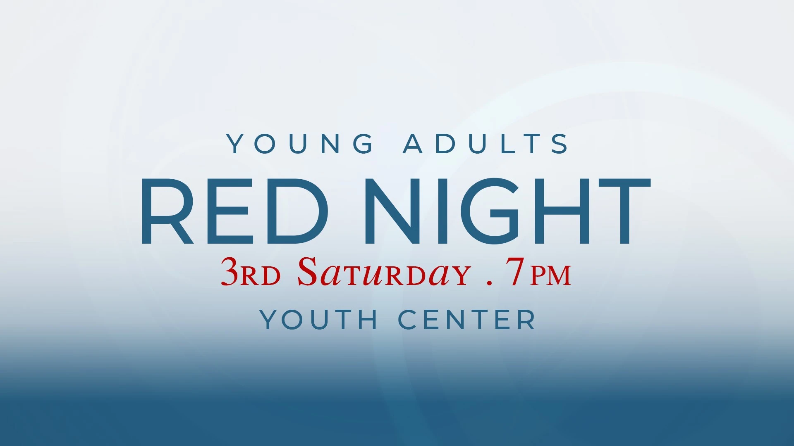
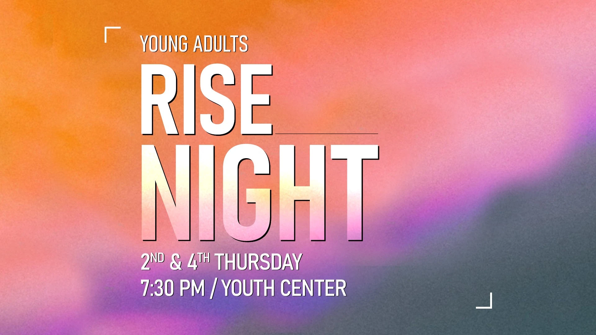

01 / Gather
RED Night
Young adults meet on the third Saturday of every month - 7 PM at the Youth Center
Follow UsYoung Adult Ministry

01 / Gather
Young adults meet on the third Saturday of every month - 7 PM at the Youth Center
Follow Us
02 / Connect
From games to small group conversations, we discuss who we are, who God is to us, and what our life goals are. Join us the 2nd & 4th Thursdays of every month - 7:30 PM at the Youth Center
Contact
Part of a bigger church family.
Your sons and daughters will prophesy, your young men will see visions, your old men will dream dreams. Even on my servants, both men and women, I will pour out my Spirit in those days, and they will prophesy. // Acts 2:17-18